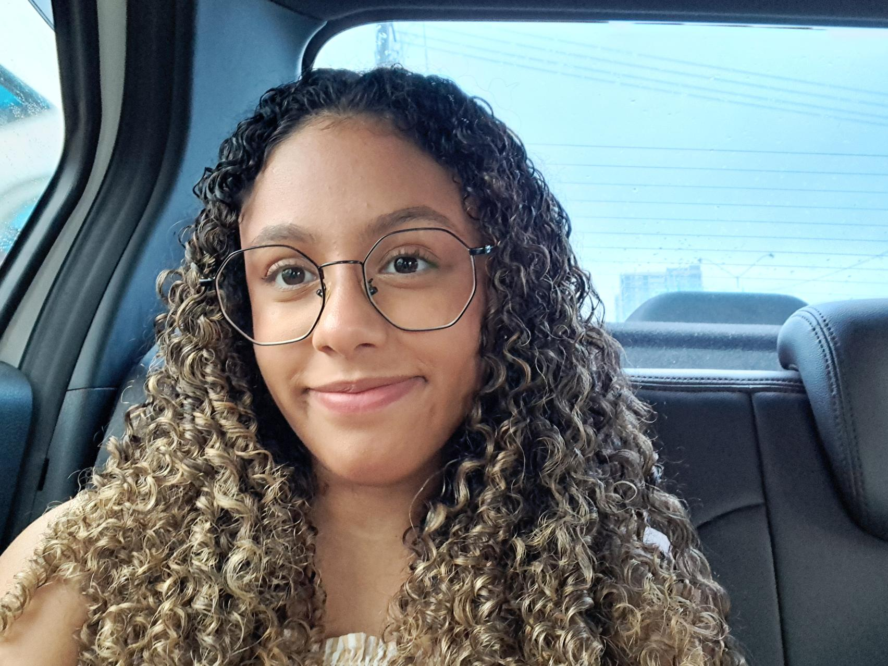
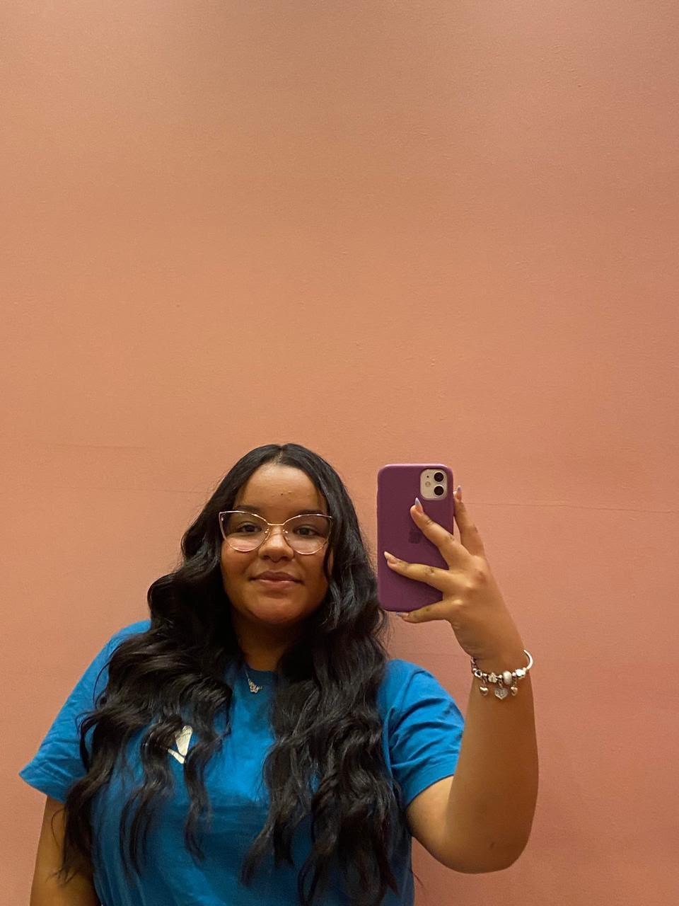
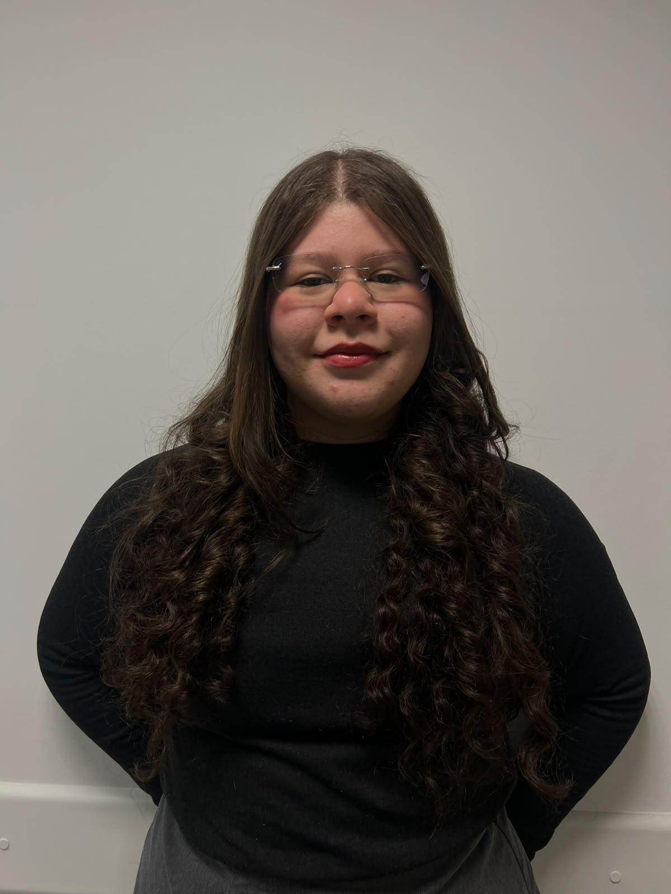
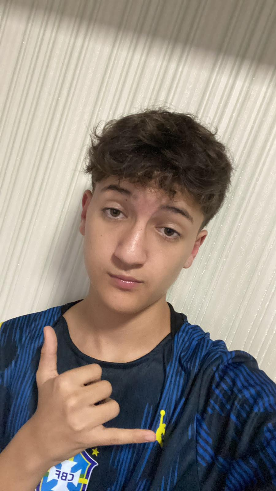

Somos um projeto feito por estudantes que busca dar visibilidade e incentivar artistas neurodivergentes. Queremos mostrar que, não importa as suas dificuldades, você ainda pode se expressar através da arte!
Conheça os estudantes responsáveis pelo desenvolvimento do projeto.

Responsável pela estrutura e identidade visual do projeto.

Focado na curadoria de informações sobre neurodivergências.

Gerenciamento de comunicação e engajamento da plataforma.

Organização geral do projeto e validação de acessibilidade.